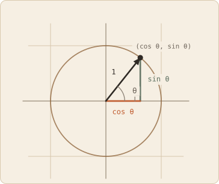
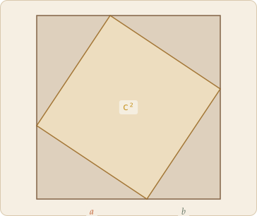
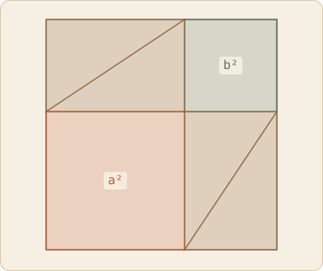

Trigonometry is one idea stretched a long way: in a right triangle, the
shape is fixed by one angle, so the ratios between the sides depend on
that angle and nothing else. Name those ratios and you have sine and
cosine. Add the one theorem relating the sides and you have almost
everything the rest of this collection leans on.
Draw a right triangle with a chosen angle
θ. Now draw a bigger one with the same angle.
The two are similar — same shape, different size — so every side of
the second is the same multiple of the corresponding side of the
first. Which means the ratios between sides come out
identical in both.
That is the whole foundation. A ratio of two sides carries no
information about how big the triangle is, only about its shape, and
its shape is set by θ. So each ratio is a
function of the angle alone, and those functions deserve names.
sinesin θ = opp / hyp
How much of the hypotenuse points across.
cosinecos θ = adj / hyp
How much of it points along.
tangenttan θ = opp / adj
The slope of the hypotenuse.
The clearest picture drops the triangle onto a circle of radius 1.
Then the hypotenuse is 1, dividing by it changes nothing, and the two
ratios become plain coordinates: a point at angle
θ on the unit circle sits at
(cos θ, sin θ).

Reading trigonometry off that circle answers most questions without
any memorised table. Cosine starts at 1 and falls to 0 at a quarter
turn, because the point starts on the right and travels to the top.
Sine does the reverse. Both are trapped between −1 and 1 because the
point never leaves the circle — a fact that turns out to matter enough
to reappear at the end of this page. Past a quarter turn the point
crosses into the second quadrant, its x-coordinate goes negative, and
so does the cosine.
The circle also explains why these functions repeat. Go all the way
round and you are back where you started, so sine and cosine are
periodic with period 2π. Every wave you have ever seen plotted is this
point going round and round, with one coordinate graphed against time.
The Pythagorean theorem
One relation ties the three sides of a right triangle together. With
legs a and b and
hypotenuse c:
a² + b² = c²
It deserves more than a statement, because it is the reason distance
works the way it does, and because there is a proof you can see in a
single glance rather than follow line by line.
A proof you can see
Take four identical copies of the right triangle and a square whose
side is a + b. Pack
the four triangles into the corners, each rotated a quarter turn from
the last. What is left in the middle is a tilted square, and its side
is the hypotenuse c.

leftover = c²

leftover = a² + b²
The same outer square and the same four triangles, packed two ways.
Whatever is not triangle has to be the same area in both.
Now slide the four triangles into the other arrangement — two of them
paired into a rectangle in one corner, two into a rectangle in the
other. The outer square has not changed and neither have the
triangles, but the empty space has rearranged itself into two squares:
one of side a and one of side
b.
(a + b)² = 4 · ½ab + c² first packing
(a + b)² = 4 · ½ab + a² + b² second packing
⟹ a² + b² = c²
Same container, same four pieces, so the uncovered area is the same
both times. No algebra beyond subtracting the triangles from both
sides. The theorem is a statement about
areas before it is a statement about lengths, which is why
the squares in the name are literal squares.
Why it is everywhere
Put the triangle on a coordinate grid with the right angle at the
origin and the theorem becomes the distance formula: a point at
(x, y) sits √(x² + y²) from the origin. That is not an analogy — the
legs are the coordinates. Every length computed anywhere in
this collection traces back to it.
It also hides inside the unit circle. The point (cos θ, sin θ) is one
unit from the origin by construction, so applying the theorem to the
little triangle under it gives:
cos²θ + sin²θ = 1
Usually called the Pythagorean identity, and named accurately: it is
not a separate fact to memorise, it is the theorem applied to a
triangle whose hypotenuse happens to be 1. Anywhere you see that
identity used, Pythagoras is doing the work.
And it is what makes
length from a dot
product possible: |v| = √(v · v) is the theorem written without
reference to triangles, which is how distance survives into
dimensions you cannot draw.
Drag either corner.
Reading the board
The two legs are drawn as vectors laid tip to tail:
a runs along, then
b runs across from where it ends, and the
hypotenuse from start to finish is their sum. The right triangle and
the vector sum a + b
are the same picture — which is why the
tip-to-tail walk
and Pythagoras keep turning up together.
With the squares switched on you can watch the theorem hold as a
running total: the clay square and the sage square always add up to
the ochre one, whatever you drag the corners to. The panel prints the
same equation numerically.
The two bars compare the hypotenuse against each leg. Since
c is the longest side of a right triangle,
both ratios always exceed 1, and each is the reciprocal of a familiar
function: c / a = 1 / cos θ and c / b = 1 / sin θ. Watch what happens
as you flatten the triangle. Shrink b toward
zero and c / a settles down to 1 — the hypotenuse and the along-leg
become the same segment — while c / b runs away without limit, because
you are dividing by something vanishing. The blow-up is the honest
signal that sin θ → 0.
Two inequalities that follow
Put the dot product and the length formula together and two bounds
appear. They look like technicalities. They are the reason any of the
preceding vocabulary is allowed to exist.
Cauchy–Schwarz
|a · b| ≤ |a| |b|
The geometric formula makes this nearly self-evident:
a · b = |a| |b| cos θ, and cos θ never escapes the band between −1 and
1 — which is the entire content of the cosine curve under the
dot products board.
Multiply through and the product of two vectors can never exceed the
product of their lengths.
The picture says it even faster. The shadow of
a on b has length
|a| |cos θ|, and a shadow is never longer than the thing casting it.
Multiply both sides of |shadow| ≤ |a| by |b| and you have the
inequality.
Deriving it without leaning on the angle takes one more step, and is
worth seeing because it never mentions geometry at all. Pick any
number t, slide
tb along
b's line, and look at what is left over. It's
a vector, so its squared length cannot be negative:
|a − tb|² = (a − tb) · (a − tb)
=
|a|² − 2t(a · b) + t²|b|² ≥ 0
That is a quadratic in t that never dips
below zero, so it cannot cross the axis twice, so its discriminant is
at most zero:
(If b is the zero vector both sides are
zero and there is nothing to prove.)
The t that minimises that quadratic works out
to (a · b)/|b|² — precisely the coefficient that produces the shadow on
the board. So the algebra is doing exactly what the picture does:
subtract off the shadow, then note that whatever sticks out sideways
still has a length, and lengths are never negative. Equality happens
when nothing sticks out — when a is a multiple
of b.
The triangle inequality
|a + b| ≤ |a| + |b|
Expand a sum the same way, using
v · v = |v|²:
|a + b|² = (a + b) · (a + b) =
|a|² + 2(a · b) + |b|²
Cauchy–Schwarz caps that middle term at |a| |b|, and the rest is a
perfect square:
|a + b|² ≤ |a|² + 2|a| |b| + |b|² =
(|a| + |b|)²
Both sides are non-negative, so taking square roots preserves the
inequality and the result follows.
|a + b| < |a| + |b|
|a + b| = |a| + |b|
The detour and the direct route, and the one case where they agree.
The name carries the intuition. Lay a and
b tip to tail — the same walk the
linear combinations board draws
— and a + b is the
direct arrow from start to finish. The inequality says the direct
route is never longer than the detour. The two agree only when the
detour isn't one: when the vectors point the same way and the triangle
flattens onto a line.
Why they matter
These two bounds are what promote |v| = √(v · v) from a formula into a
usable notion of distance. Define the distance between two points as
|u − v| and the triangle inequality becomes the promise that you can
never get somewhere faster by detouring through a third point. A
"distance" without that guarantee would tell you nothing.
Cauchy–Schwarz does the same job for angle. Rearranged, the geometric
formula reads cos θ = (a · b) / (|a| |b|), and to recover
θ you feed that ratio to arccos — which only
accepts inputs between −1 and 1. Cauchy–Schwarz is exactly the promise
that the ratio never escapes that range, in any number of dimensions.
You cannot picture the angle between two thousand-component vectors,
but the inequality guarantees there is one to talk about. Every time a
search engine or recommender compares two embeddings by cosine
similarity, that is the guarantee it is standing on.